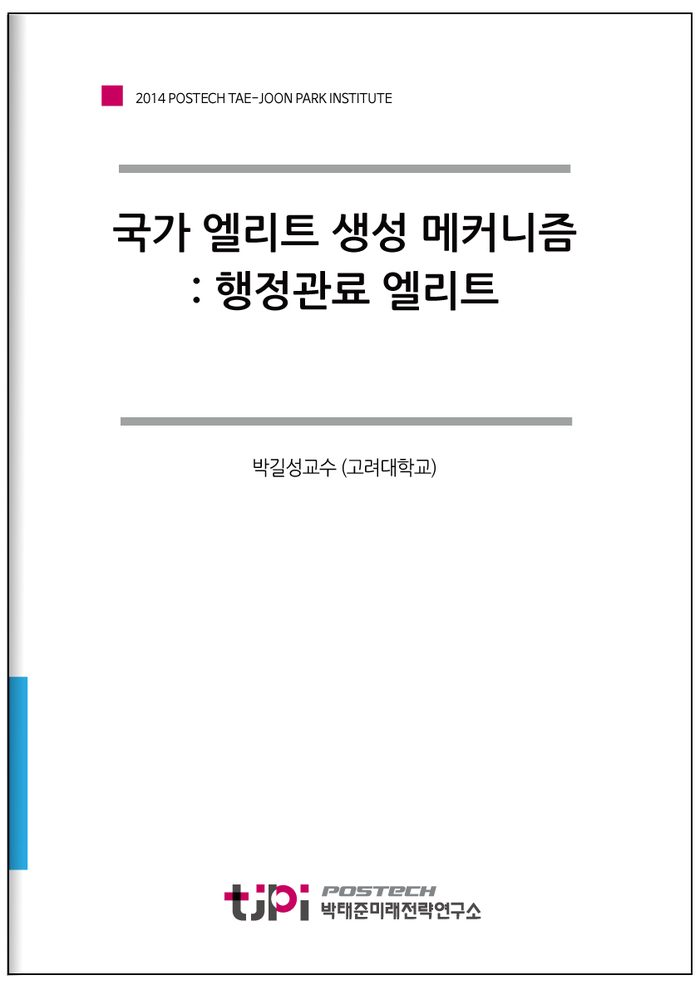

저자 박길성교수 (고려대학교)보도일 2014-12-09

요 약
국가 엘리트 생성 메커니즘: 행정관료 엘리트
왜 지금 한국의 행정관료 엘리트 메커니즘 혁신인가?
첫째, 한국 현대사에서 2014년만큼 행정 관료가 곤혹스러웠던 때도 없었을 것이다. 지난 7월 공무원을 대상으로 한 조사에서 10명 중 8명이 전직을 고려해봤다 응답이 이를 말해준다(서울경제, 7. 28). “관피아”라는 속칭에서 곤혹스러움은 극에 달한다. 실제로 관피아(관료+마피아)라는 용어는 2014년 이전에는 존재하지 않았던 용어다. 그 어떤 검색에도 등장하지 않는다. 그동안 언론에서 언급된 관피아라는 용어에 붙어 다니는 수식어를 정리하면 관료 천국의 암적 결탁, 전관 예우형 낙하산, 재취업 고리의 유착커넥션, 폐쇄적인 집단 결속, 검은 카르텔의 특권과 문화, 생명경시의 야만과 같은 반사회적 용어들이다. 관피아라는 표현은 한국의 행정 관료 엘리트를 몰책임, 탐욕과 결탁의 상징으로 낙인찍었다. 그것도 행정의 수반인 대통령에 의해서 말이다. 그동안 무능과 보신, 부패, 철밥통, 순혈주의, 무사안일ㆍ복지부동ㆍ전문성부족의 이름으로 행정 관료들을 몰아친 적은 있었지만 범죄조직의 용어로 표현된 적은 없었다.
둘째, 급변하는 글로벌 환경 속에서 정부는 지속적으로 변화해야하는 당위에 직면해 있다. 창의융합적 대응은 현대의 복합위험사회 특징에서 더욱 중요하게 제기된다. 현대사회 자체가 과거와는 다른 위험의 요소를 안고 있다. 네트워크, 바이오, 인공지능, 나노와 같은 최첨단 테크놀로지도 언제 재앙이 될지 모르는 위험이 잠재적 일상이 되고 있다. 메가리스크(mega risk) 시대에 직면하고 있는 것이다. 현대사회에 내재하는, 또한 표출되는 위험은 중층위험으로서 위험의 구성이나 발생의 층위가 복합적이다. 언제 닥쳐올지 모르는 위험을 오늘의 문제인 듯 준비하는 위험관리의 능력이 요청된다. 하나같이 새로운 행정 관료의 생성 메커니즘을 논의해야할 시대적 배경이다.
프랑스, 독일, 미국에서 참조할 것은 무엇인가?
프랑스는 국가주도의 네트워크형 메커니즘이라 할 수 있다. 프랑스의 행정 관료 엘리트는 국립행정학교로 수렴한다 하여도 과언이 아니다. 실무능력 배양을 목적으로 편성된 국립행정학교의 교육과정을 이수하고 나면 고위 공무원으로서의 직책을 수행하게 된다. 고위공무원단이라는 자율성 높은 공무원 집단을 형성하며 내부규약에 의거한 자체적 인사권까지 보유하게 된다. ‘그랑제꼴’, ‘고위공무원단’의 네트워크는 상호 유기적으로 결합되어 있으며, 프랑스 공화국의 탄생 이래 지금까지 프랑스 사회 전반에서 주도적인 역할을 수행하고 있는 행정 관료 엘리트의 양성을 전담하고 있다.
일은 정당기반의 지방분권형 메커니즘으로서의 특징이 뚜렷하다. 독일 정치사회 내 각 정당들과 긴밀한 관계를 유지하고 있으며, 정당재단은 독일 국민 전체를 대상으로 조기 정치교육을 실시한다. 어렸을 때부터 배양된 정치의식과 공무원의 정당가입을 허용하는 독일의 공무원법으로 인해 독일 내 공무원들의 정당 가입률은 높은 편이며, 이들은 공직 경력을 바탕으로 정당 정치인으로 거듭나기도 한다. 더불어 독일 정무직 공무원들의 경우 정권 교체와 궤를 같이하여 교체된다. 게다가 연방에서 제정한 법률 또한 주 대표들로 구성된 연방 평의회의 동의를 받아야 실효를 발휘할 수 있다는 점과 공무원 선발권 역시 각급부처 및 지방정부에 분할되어 있다는 점은 독일 행정 관료 엘리트 양성 메커니즘의 지방분권적 속성을 분명하게 드러내주는 부분이다.
미국의 행정 관료 엘리트의 생성을 시장주도의 다중경로형 메커니즘이라고 규정하는 데 무리가 없다. 미국에서는 특정 국가기관이나 국공립 교육기관이 행정 관료 엘리트 양성에 있어 핵심적인 위치를 점유하고 있지 않다. 비록 공무원 인사 업무의 주무기관인 인사관리처가 존재한다고는 하나 인사관리의 분권화 기조에 입각해 각 부처에 인사관리권을 위임하고 있는 만큼 인사관리처의 역할에 비중을 두긴 어렵다. 부처별 채용에 표준화된 전형 양식이 존재하는 것도 아니다. 국가가 고위 공무원 채용 및 교육을 위해 어떤 획일화된 경로도 채택하고 있지 않기 때문에 누구나 합당한 경력과 자질만 갖추고 있다면 대통령관리직 인턴프로그램 등의 다양한 방법으로 행정 관료 엘리트로의 진로가 가능하다.
한국의 행정관료 배출 메커니즘 개혁 방안
한국은 발전국가에서 복지국가로, 산업사회에서 지식기반사회로, 유능한 추격국가(fast follower)에서 혁신적인 선도국가(first mover)로의 기로에 서있다. 행정 관료의 역할은 여전히 중요하다.
과제는 개방성과 전문성이다. 미래를 위한 혁신의 인큐베이터로서 역할이 필요하다. 행정 관료 엘리트들에게 전문가라는 자부심은 필수적인 요소이다. 책임감이란 자부심에서 비롯한다. 청렴성도 마찬가지다. 많은 비판이 자부심과 책임감이 결여되어 있음에서 기인한다. 직급과 직위에 맞는 전문능력 배양이 중요하다. 행정 관료 엘리트를 생성함에 있어 교육은 여전히 중요하다. 프랑스와 같이 국가의 모든 인재를 결집시킬 수 있는 교육기관에서 모든 분야에서 일정 수준 이상의 전문성을 발휘할 수 있도록 교육하는 것도 하나의 대안이다. 다른 한편으론 독일이나 미국과 같이 각급대학이나 민간 연구소와의 연계를 통해 공무원의 신규 충원은 물론 교육과정에서의 내실을 갖추어 행정 전문가로 육성하는 방법도 고려해볼 수 있을 것이다. 어느 쪽이 되었든 지금과 같이 단선형적인 고시를 통해 선발된 행정 관료들이 이수하는 교육과정만으로는 ‘왜 지금 행정 관료 엘리트인가’의 질문이 제기되는 시대 상황에는 많이 뒤쳐진다는 것이 일반적인 평가이다. ‘선례가 없어서’ ‘규정이 없어서’ ‘예산이 없어서’. 이 3가지 '없어서'가 한국 행정관료사회에서 없어져야 한다.
막스 베버는 소명으로서의 정치를 논하면서 정치가가 갖추어야할 자질로 열정, 책임감, 그리고 균형감각을 주문하였습니다. 행정 관료는 이보다 더 엄격한 자질을 하나 더 갖춰야한다. 전문성이다. 행정 관료 엘리트는 적어도 가치 논쟁, 사실 논쟁, 정책 논쟁은 구분할 줄 알아야한다. 변화를 놓치는 것이 가장 위험한 일이다. 시대의 흐름을 읽지 못하고 자기 틀에 갇혀있을 때 소명으로서의 관료는 생명력을 잃게 된다.
대한민국의 현대사는 일상의 관점에서 1997년 외환위기 이전과 이후로 나뉜다. 이제는 또 다른 구분이 있어야 한다. 2014년은 정치적 국면 전환용이 아니라 성장에서 성숙으로, 위험에서 안전으로, 불신에서 신뢰로 전환하는 역사적 전환점이 되어야 할 것이다. 바람직한 행정 관료 엘리트의 생성에 대한 혁신이 더 다급하게 요청되는 까닭이다.
목 차
Ⅰ. 왜 지금 행정 관료 엘리트인가
Ⅱ. 프랑스: 국가 주도의 네트워크형 엘리트 양성리더십 환경의 변화 : 개인•집단•제도
Ⅲ. 독일: 정당 기반의 지방분권형 엘리트 양성
Ⅳ. 미국: 시장 중심의 다중경로 엘리트 양성
Ⅴ. 마무리: 3가지 다른 경로
참고자료
내 용
[2014 연구논문] 국가 엘리트 생성 메커니즘 : 행정관료 엘리트
박길성교수 (고려대학교)